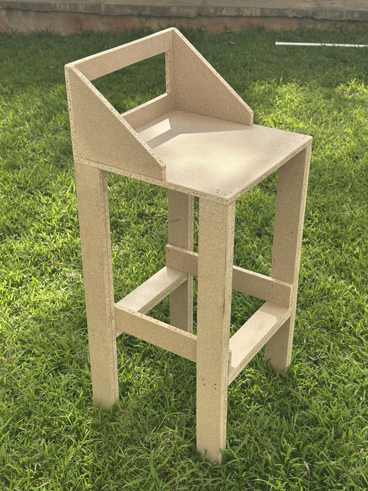
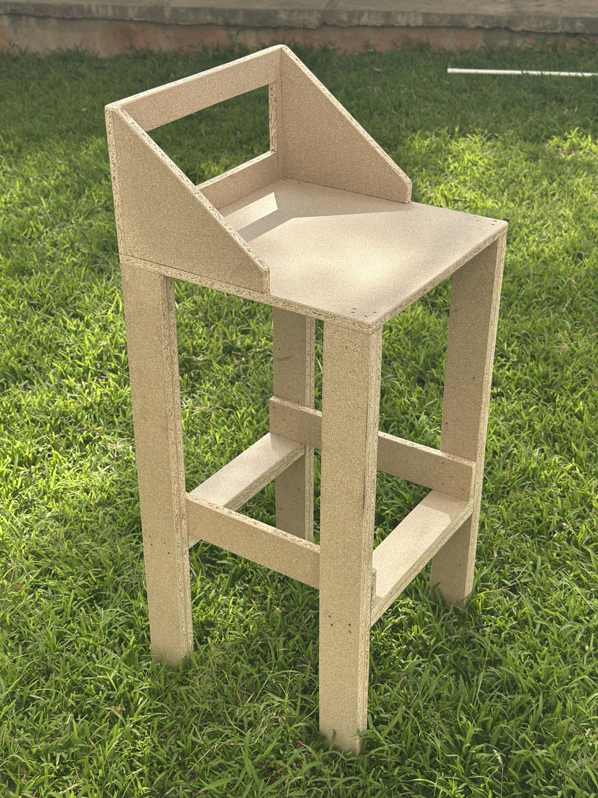

Projects


Photography
I am a passionate photographer who loves to capture moments and share them with others. I have a keen eye for detail and a love for the beauty of the world around me. My work has been featured in several local publications and I am always looking for new opportunities to capture the world around me.


The KareSansui laptop table
The KareSansui laptop table is a unique set up that consists of a space hutched with a zen garden. This design also consists of a storage space. With its core purpose as a portable working space it doubles as a stress buster for neurodivergent folks that is not over stimulating.


Technical Drawing
As an ardent artist, mastering technical drawing was well within my reach and is something I love doing.


Logo Design
Logo design for ui/ux project for a parking zone app. the logo is specifically curated to denote spotting of the next parking spot with respect to the application's brand.
 

Brutalism Stool
This stool is inspired to meet brutalism sub standards. This amateur design is a symbol of my experiment with one of the most sought out design styles which has the reputation to be minimalistic and strong. This bar stool signifies aloofness yet welcomes visitors who deem themselves some detachment from the regular hypocritically colourful society.
Contact me
Feel free to reach out to me through any of the following contact methods. I'll get back to you as soon as possible.